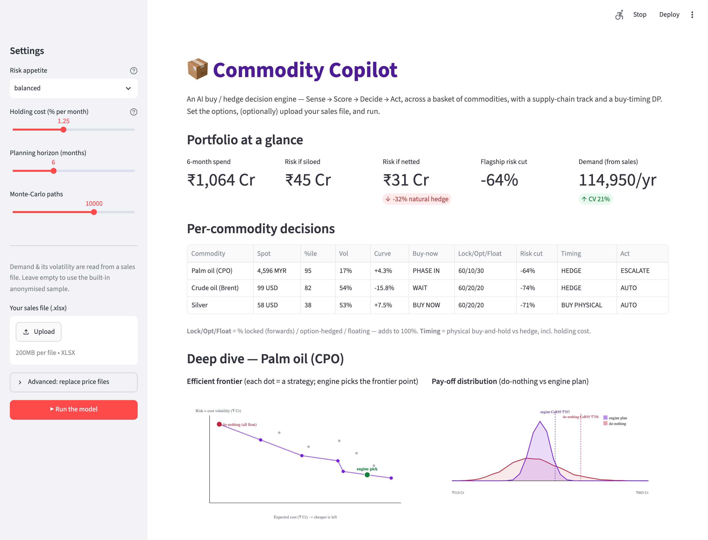

Procurement case-study prototype · Open-source · Deployed
AI Commodity Copilot
a Buy / Hedge Decision Engine
Helps a procurement team decide what to buy, when, how much, and whether to hedge —
fusing a Financial and a Supply-Chain track through a Sense → Score → Decide → Act
engine, and choosing the plan with the best risk-adjusted cost.

The working Streamlit web app — set the options, upload your sales file, and run.
How it works — Sense → Score → Decide → Act
1 · Sense6 market signals + supply-chain signals (demand, inventory, lead time, suppliers)
2 · Scorea 0–100 Buy-Now score and a supply-urgency score
3 · DecideMonte-Carlo → the buy/hedge mix with the lowest RALC (risk-adjusted cost)
4 · Actauto-execute inside governance caps, else escalate — humans stay in control
- Monte-Carlo simulation — 20,000 possible price futures, not a single guess.
- RALC objective — optimises expected cost and stability together.
- Buy-timing dynamic program — physical buy-and-hold (with holding cost) vs hedge, whichever is cheaper.
- Portfolio view — nets correlated risk across commodities.
- Explainable & governed — confidence, top drivers, audit trail, human override.
Explore the solution
Run the live app
▶ Launch it right here in your browser — the full Python app runs entirely
client-side (WebAssembly, via stlite), so it works on this permanent link with no server. First load
takes ~30–60 seconds. You can also:
- Deploy free on Streamlit Community Cloud for a full-speed hosted version: at
share.streamlit.io, connect this repo (
pulket/commodity-buy-hedge-copilot),
main file app.py.
- Run locally:
pip install -r requirements.txt then streamlit run app.py.